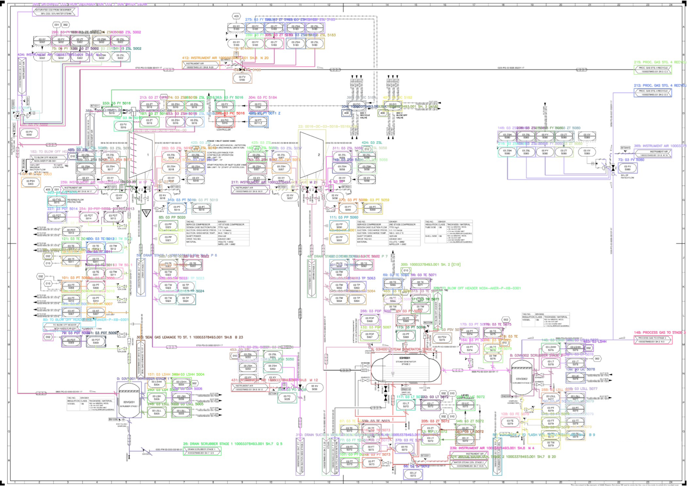
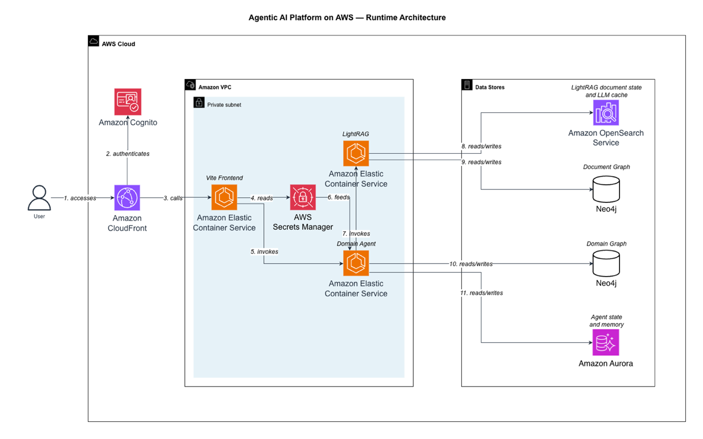

Case at a glance
先看结论：这篇案例能帮企业做什么判断？
如何让静态 P&ID 图纸不仅能被工程师查看，还能被系统搜索、关联和用于故障排查？
把设备、仪表、管线与连接关系转为可查询知识网络，并由工程师校验，使图纸知识能服务维护与运营。
适合图纸多、设备复杂、停机成本高，并且高度依赖资深工程师经验的制造企业。
不要只看用了什么技术，要看业务链路怎样改变。
- 01静态 P&ID
读取文字、线条、设备符号、坐标和图纸版本
- 02关系重建
将设备与连接转换为节点、边和层级结构
- 03专家校验
工程师修正识别结果和跨页连接
- 04可查询知识
问答、故障分析和维护准备返回可追溯结果
Operational bottleneck
图纸包含关键工程知识，但 PDF 只能“被人看”，很难“被系统问”。
一份 P&ID 记录阀门、管线、仪表、设备和连接关系。大型工厂可能有上百页图纸；当工程师需要查找某个部件上下游、确认故障影响或准备维修时，人工翻图速度慢，也依赖少数资深人员的经验。
Hybrid digitisation
可直接读取的内容不必走 AI，难识别的符号再用视觉模型。
案例采用混合方式：先直接提取 PDF 中已有的文字和线条，再用图像匹配识别泵、阀门、仪表等符号，最后由工程师确认。这样既减少计算和误差，也把人工精力集中在真正复杂的部分。
- 01
拆解图纸
读取每一页的文本、几何线条、符号候选和坐标。
- 02
识别设备
把图形与标准符号库匹配，给出设备类型和置信度。
- 03
重建连接
根据线条和位置推断上下游、控制和测量关系。
- 04
工程师确认
在可视界面中修正错误，关键资料达到可用准确度。
- 05
保存版本
把确认后的对象和关系写入知识网络，并保留图纸版本。
From drawing to answers
知识图谱保存连接关系，文档检索补充操作说明，专用助手负责组织答案。
工程师问的不是“图上有什么字”，而是“关闭这个阀会影响哪些设备”。
Original diagrams
原文图展示了从工程图到知识网络和问答的两层结构。


Business value
先从查图和维护准备入手，再扩展到更高风险的运营决策。
图纸搜索与定位
让工程师快速找到设备、页码和关联文档，减少查找时间。
维修与变更影响分析
列出可能受影响的上下游对象，由工程师确认后进入工单。
实时操作建议
必须结合实时系统、严格权限和工程审批，不能只凭文档助手执行。
对企业来说，最重要的前置工作是图纸版本管理、设备编码一致性和工程师复核机制。没有这些基础，再强的模型也可能在错误版本上给出看似合理的答案。
Business value & adoption
对企业的价值，不在“用了 AI”，而在时间、质量、风险和能力怎样变化。
缩短查图时间
从逐页翻找变为按设备、回路和上下游关系查询。
保存工程知识
把连接关系和资深人员经验转成可持续维护的企业资产。
支持维修准备
快速定位受影响设备、相关手册和可能的隔离范围。
保留工程边界
自动提取与问答都经过版本、权限和工程师确认。
出现这些条件时，值得进入试点
- P&ID 数量大、查找时间长且停机代价高
- 设备编码和图纸版本有基本管理
- 愿意让工程师参与校验，而不是只依赖图像模型
- 有明确的首批问答与维护场景
这些情况要先补基础或缩小范围
- 图纸长期未更新，现场与文档严重不一致
- 希望系统直接控制设备或替代安全操作程序
- 缺少设备主数据和统一命名
- 只做全文检索，却不需要设备关系和流程上下文
从哪里开始
选一个设备系统或一组 5–10 页图纸，验证符号、跨页连接、工程师校验和 20 个高频问题。
开始前要准备什么
图纸版本、设备编码、符号模板、工程负责人和明确的权限范围。
怎样判断是否值得扩展
查找时间、关系识别准确率、人工修正量、问题命中率、引用完整性和维修准备时长。
管理层和项目负责人应先问的五个问题
这些问题比“选哪个模型”更早，也更能决定项目能否形成业务价值。
- 01
哪类查图任务最频繁、最耽误停机恢复？
- 02
现有图纸与现场设备的一致性如何？
- 03
哪些关系必须达到 100% 人工确认？
- 04
知识图谱如何与设备主数据、手册和工单关联？
- 05
助手能建议到什么程度，哪一步必须由工程师签字？